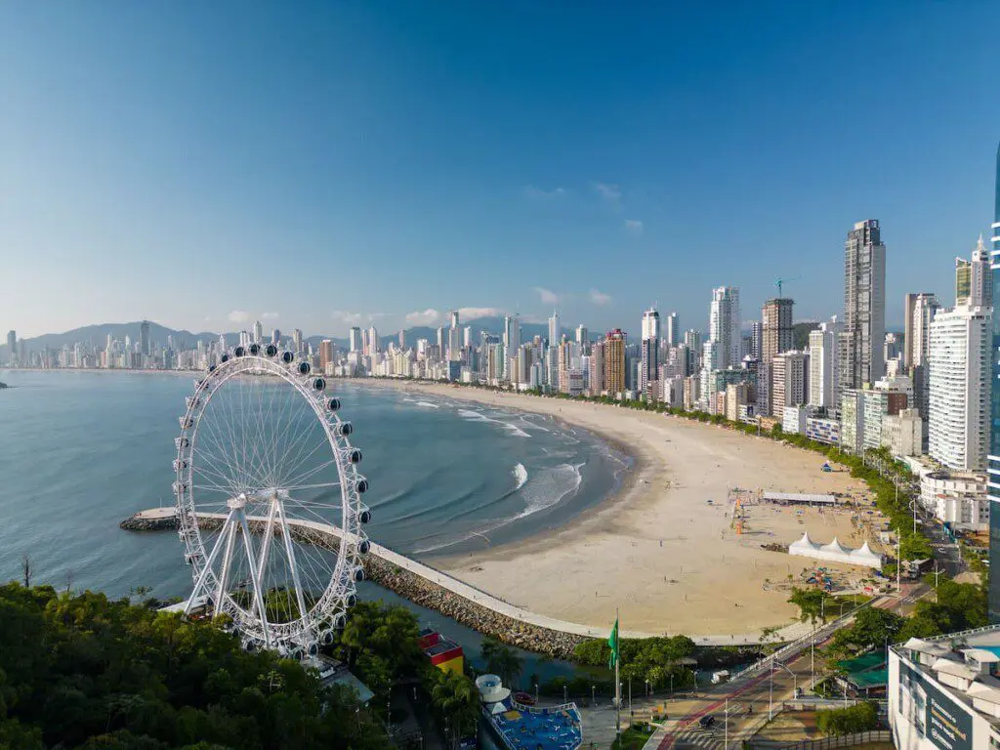
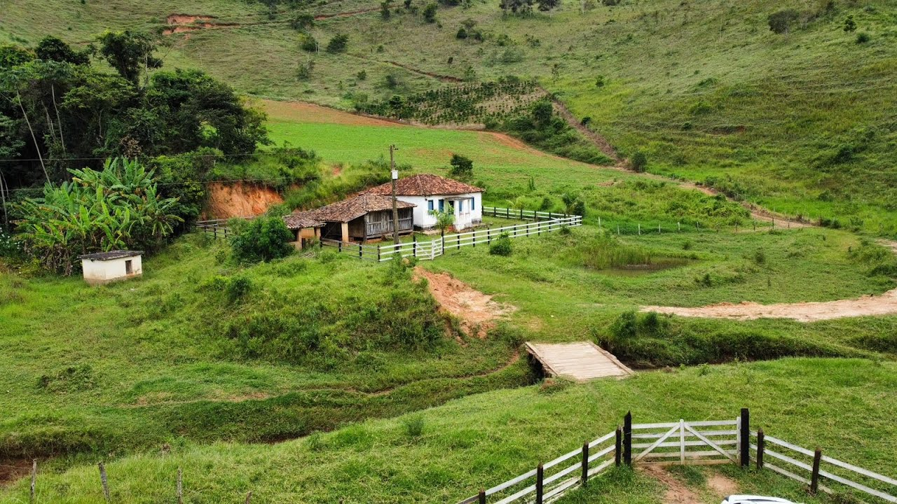
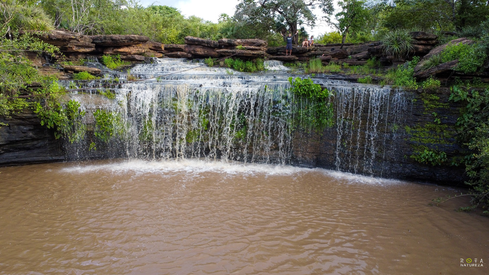

Vida no Campo (Sítio)
A vida no campo é marcada pela tranquilidade e contato com a natureza. É comum trabalhar com agricultura e viver em um ambiente mais calmo.
Curiosidade: No campo, muitas famílias produzem o próprio alimento, como ovos, leite e verduras.
Vida na Cidade
A vida urbana é agitada, com mais acesso a tecnologia, saúde, lazer e serviços. As pessoas estão sempre com pressa e há muitas opções de trabalho.
Curiosidade: Algumas cidades nunca "dormem", funcionando 24 horas por dia, com lojas, metrôs e serviços sempre ativos.
Galeria: Campo e Cidade






Comparação entre Campo e Cidade
| Aspecto | Campo | Cidade |
|---|---|---|
| Ambiente | Natural e calmo | Urbano e agitado |
| Trabalho | Agricultura e pecuária | Serviços, indústria, comércio |
| Transporte | Veículos próprios, estradas rurais | Ônibus, metrô, carros |
| Qualidade do ar | Mais limpo | Mais poluído |
Conclusão
Cada ambiente tem seu valor. A vida no campo oferece paz e natureza, enquanto a cidade traz movimento e oportunidades. O importante é reconhecer os pontos positivos de cada lugar.